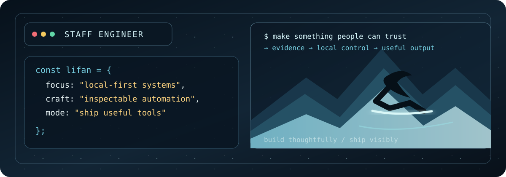

Local-first products
Tools that keep personal data and important decisions close to the user.
Staff engineer · builder · evaluator
I build local-first products and agent infrastructure with visible boundaries: what happened, what was proposed, what a person approved, and what finally shipped.

What I work on
Tools that keep personal data and important decisions close to the user.
Durable workflows, tools, and control surfaces for coding agents.
Evidence, benchmarks, and review loops that make capability visible.
Agent infrastructure that learns from its own work without hiding the trail.
Selected builds
Customer-service advocacy that pauses at structured decision checkpoints before consequential actions.
View project Local-first CLIExport patient-owned MyChart records through a local Chrome/Puppeteer harness.
View project Open sourceTrack welcome bonuses, annual fees, recurring credits, certificates, and loyalty expirations.
View project Data productSki and snowboard deal aggregation across North American retailers, with current and historical context.
View project AutomationA source-to-podcast framework with reusable stages, audio integrations, publishing, and validation.
View project Agent toolingA tiny filesystem memory layer for coding agents: durable context, skills, and local scripts.
View projectHow I build
Turn the goal into a check. Inspect failures and evidence. Improve the system. Run the check again before shipping. Claude Code and Codex are my primary agent tools, supported by shell, browser, test, and review workflows.